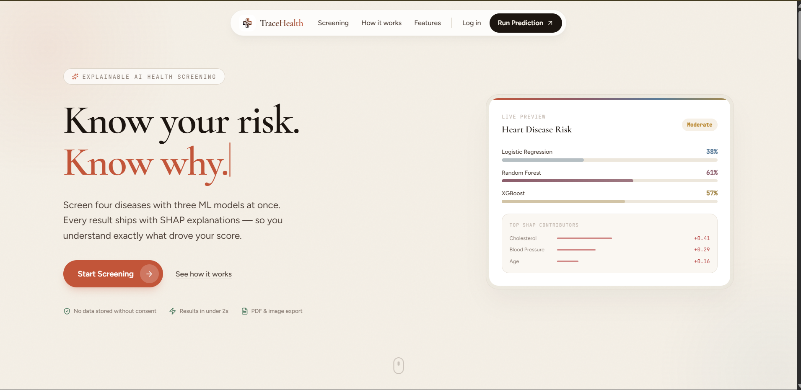
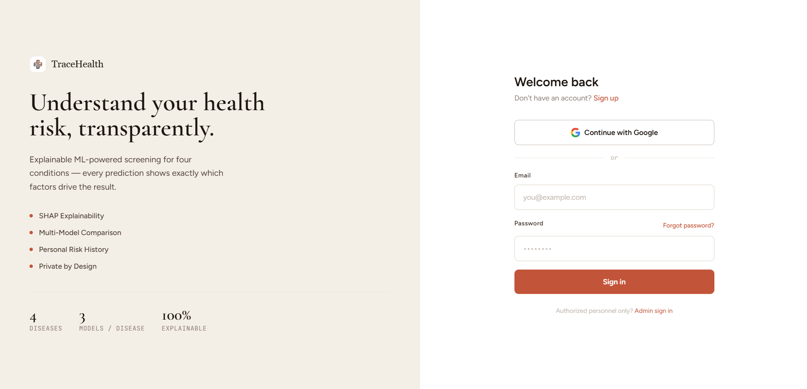
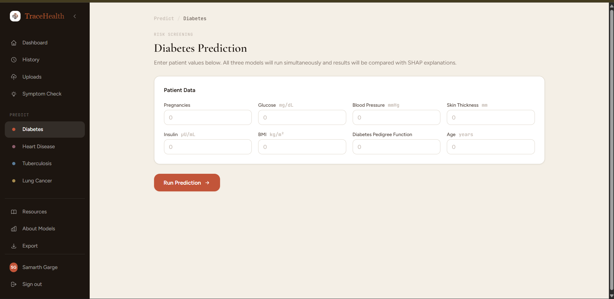
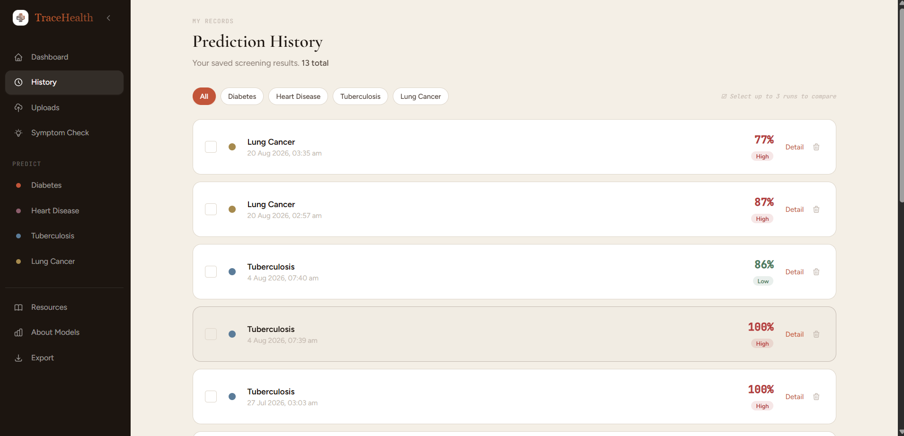

An explainable, multi-disease health risk screening platform — combining tuned ML models, SHAP-based reasoning, a React + FastAPI architecture, and MongoDB-backed user management.
To design and develop a full-stack, explainable AI-powered health risk screening platform that democratizes access to multi-disease risk assessment.
Unified Screening. Build a single platform that screens for four major diseases — Diabetes, Heart Disease, Tuberculosis, and Lung Cancer — with consistent methodology and user experience.
Explainable AI. Ensure every prediction is accompanied by SHAP-based reasoning, so users understand why their risk is High, Moderate, or Low — not just the number.
Multi-Model Comparison. Run three ML algorithms (Logistic Regression, Random Forest, XGBoost) simultaneously and present side-by-side results for full model transparency.
Longitudinal Tracking. Enable authenticated users to save prediction history, track how their risk evolves over time, and export data in CSV, JSON, and PDF formats.
Zero-Cost Deployment. Deploy on entirely free cloud tiers (Vercel + Render + MongoDB Atlas M0), proving enterprise-quality healthcare AI is accessible to students, researchers, and low-resource clinics.
Privacy & Security. Implement JWT-based authentication, role-based access control, data consent management, and GDPR-style privacy practices for handling sensitive health data.
TraceHealth is a full-stack, explainable AI-powered health risk screening platform that allows users to assess their risk for four major diseases — Diabetes, Heart Disease, Tuberculosis, and Lung Cancer — using validated machine learning models. Unlike traditional "black-box" health prediction tools, TraceHealth pairs every prediction with SHAP (SHapley Additive exPlanations)-based reasoning, enabling users to understand exactly which health parameters drove their risk score and by how much.
The platform employs three distinct ML algorithms — Logistic Regression, Random Forest, and XGBoost — for each disease, running all three simultaneously and presenting a side-by-side comparison. An ensemble average provides a balanced overall risk level (Low, Moderate, or High), while individual model results let medically literate users or practitioners examine algorithmic consensus or disagreement.
On the backend, TraceHealth is built with FastAPI (Python), serving a REST API with JWT-based authentication, role-based access control, Google OAuth integration, and password reset via Gmail SMTP. The frontend is a modern single-page application built with React 18, Vite, React Router, Zustand for state management, and GSAP for premium animations.
Key features include: prediction history with full SHAP detail, a rule-based symptom checker triage wizard, secure medical file upload and AI-powered report analysis, data export in CSV/JSON/PDF formats, an admin dashboard with platform-wide statistics, and a responsive editorial design optimized for both desktop and mobile.
| Layer | Technology | Justification |
|---|---|---|
| Frontend | React 18 + Vite | Component-based architecture, fast HMR, code-splitting, largest ecosystem for SPAs. |
| Styling | Tailwind CSS + Custom CSS | Utility-first rapid prototyping with custom design tokens for premium editorial aesthetics. |
| State | Zustand + React Query | Lightweight global state (Zustand) + server-state caching and refetching (React Query). |
| Animation | GSAP | Industry-standard animation library for scroll-triggered and interaction micro-animations. |
| Backend | FastAPI (Python) | Async-native, auto-generated OpenAPI docs, Pydantic validation, fastest Python framework. |
| Database | MongoDB Atlas + Motor | Flexible schema for varied disease features, free M0 tier, async driver for FastAPI. |
| Auth | JWT (python-jose) + bcrypt | Stateless auth, httpOnly cookies, no third-party auth service dependency. |
| ML | scikit-learn + XGBoost | Production-proven, lightweight tabular classifiers. Serialized to ~12MB total with joblib. |
| Explainability | SHAP | Gold-standard for ML interpretability — TreeExplainer for RF/XGB, LinearExplainer for LR. |
| PDF Export | WeasyPrint | Python-native HTML→PDF engine for generating professional medical reports. |
| Deployment | Vercel + Render | Free tiers with auto-deploy from GitHub, HTTPS, global CDN (Vercel), Python support (Render). |
The platform is organized into distinct functional modules, each handling a specific domain of the application.
Email/password signup & login, Google OAuth, JWT access + refresh tokens, password reset via Gmail SMTP, admin login.
Run predictions for 4 diseases using 3 ML models simultaneously. Input validation, preprocessing, ensemble averaging, risk classification.
Per-prediction SHAP feature attribution for every model. Top contributors shown as interactive bar charts with direction indicators.
Paginated history with disease filter. Full detail view with SHAP breakdown. Delete individual predictions. Ownership-enforced access.
Rule-based triage wizard with weighted symptom scoring. Produces referral suggestions per disease to guide predictions.
Secure GridFS upload (PDF, PNG, JPEG, CSV). Magic-byte validation, 10MB limit. AI-powered report analysis.
Export predictions as CSV, JSON, or professional PDF reports. Date range filtering, per-prediction or bulk export.
Platform-wide stats (user count, predictions, disease distribution). Browse all users, view user details.
Profile editing, account deletion, data consent management. Role-based access control (user/admin).
A decoupled frontend/backend architecture with ML inference at the core.
User enters health parameters via the React frontend forms, validated client-side.
Data sent to FastAPI backend via REST API with JWT authentication.
3 models (LR, RF, XGBoost) run simultaneously on preprocessed features.
SHAP computes per-feature attribution for each model's prediction.
Ensemble risk level + individual model results + SHAP explanations returned and rendered.
React 18 SPA with Vite build tool. React Router for navigation, Zustand for global state, React Query for server-state caching. GSAP animations for premium feel. Responsive editorial design system with custom CSS tokens. Deployed on Vercel (global CDN).
FastAPI (Python) async REST API. 40+ endpoints covering auth, predictions, history, uploads, export, and admin. JWT tokens in httpOnly cookies. MongoDB Atlas via Motor (async driver). GridFS for file storage. 12 pre-trained ML models loaded from joblib. Deployed on Render.
Every prediction comes with a breakdown of which features contributed to the risk score and by how much — making the AI transparent and trustworthy.
| Phase | Task | Duration | Status |
|---|---|---|---|
| Phase 1 | Data Collection, Cleaning, EDA | Week 1–2 | ✅ Complete |
| Phase 2 | Model Training & Evaluation (LR, RF, XGB × 4 diseases) | Week 3–4 | ✅ Complete |
| Phase 3 | Backend API: Auth, Prediction, History endpoints | Week 5–6 | ✅ Complete |
| Phase 4 | Frontend: Landing, Auth pages, Predict UI | Week 7–8 | ✅ Complete |
| Phase 5 | File Upload (GridFS) + AI Report Analysis | Week 9 | ✅ Complete |
| Phase 6 | SHAP Integration + Interactive Charts | Week 10 | ✅ Complete |
| Phase 7 | Symptom Checker + Resources + About Models | Week 11 | ✅ Complete |
| Phase 8 | Export (CSV/JSON/PDF) + Admin Dashboard | Week 12 | ✅ Complete |
| Phase 9 | Responsive Design, Testing & Bug Fixes | Week 13–14 | ✅ Complete |
| Phase 10 | Deployment (Vercel + Render) + Documentation | Week 15 | 🔄 In Progress |
The public-facing entry points of TraceHealth — premium editorial design with GSAP animations.

src="" in this <img> tag with your screenshot path
src="" in this <img> tag with your screenshot pathCore features — disease risk prediction with SHAP explanations, prediction history, and symptom checker.

src="" in this <img> tag with your screenshot path
src="" in this <img> tag with your screenshot pathCNN-based chest X-ray screening for TB and CT/histopathology analysis for Lung Cancer using transfer learning (ResNet50) with Grad-CAM explainability.
Auto-extract structured health data from uploaded lab reports using OCR and NLP to auto-fill prediction forms.
Email alerts when risk trends change significantly over multiple assessments — proactive health monitoring.
Internationalization (i18n) to serve non-English speaking populations in underserved healthcare settings.